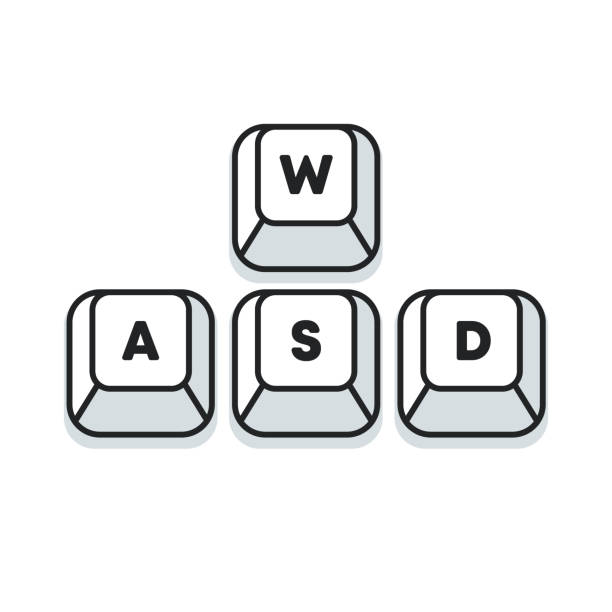

Drücke ESC, um die Spielanleitung öffnen zu können.
Bewegen

Block erstellen
Klicke mit der linken Maustaste, um Blöcke zu erstellen, und mit der rechten Maustaste, um sie zu löschen. Achte dabei darauf, dass der Cursor auf die richtige Stelle gerichtet ist.
Kamera-Höhe
Mit + und - kannst du die Höhe der Kamera verändern.
Blockfarbe ändern
Drücke die Tasten 1 bis 5, um die Blockfarbe zu wechseln.
Tageszeitwechsel
Klicke auf die Sonne/Mond über dir, um zwischen Tag und Nacht zu wechseln.